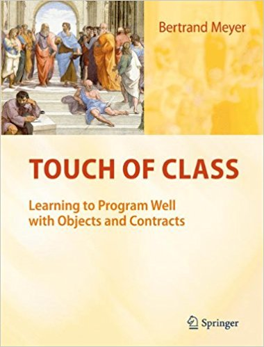

Бертран Мейер. Почувствуй класс

Краткое описание
Эту книгу определённо стоит прочесть каждому программисту. Но в качестве основного языка программирования для примеров был взят Эйфель, что может вызывать некоторые затруднения.
Подробное описание:
В книге обобщен многолетний опыт обучения программированию в ЕТН, Цюрих. В ней удачно сочетаются три грани, характерные для профессионального программирования, - наука, искусство и инженерия. Она в первую очередь ориентирована на студентов, обучающихся в области информационных технологий, и их преподавателей, но представляет несомненный интерес для всех программистов, создающих программный продукт высокого качества. В книге излагаются основы объектно-ориентированного программирования (ООП). Особое внимание уделяется корректности программ за счет введения контрактов - предусловий, постусловий методов класса, инвариантов классов. Глубоко и подробно рассматриваются такие механизмы ООП, как наследование и универсальность. Изучаются алгоритмы и структуры данных - массивы, кортежи, списки, хэш-таблицы, различные виды распределителей, деревья. Подробно рассматриваются рекурсивные алгоритмы и рекурсивные структуры данных. Даются основы лямбда-исчисления и вводятся агенты, поддерживающие функциональный тип данных. Язык Eiffel используется как рабочий язык программирования.
Характеристики книги
- Название: Почувствуй класс
- Серия: Отдельное издание
- Тип: Печатная книга
- Издательство: -
- Язык издания: Русский
- Год выпуска: 2017
- Тип обложки: Твердый переплет
- Вес в упаковке: 1116г